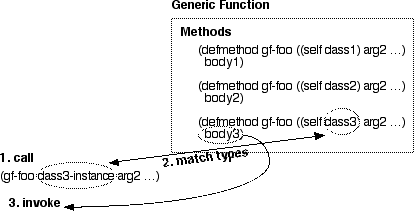
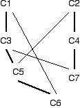

This chapter continues the treatment of CLOS (the Common Lisp Object System) that we began in Chapter 7, in which we saw how objects store data. In this chapter we'll learn about how objects get their behaviors.
A generic function provides behavior based upon the type of an object. The behavior is selected according to the types of the arguments to the generic function. The generic function dispatches control to a particular method that provides the best match to the argument types that you use to invoke the generic function.

You define a method using Lisp's DEFMETHOD macro. In its
simplest form, DEFMETHOD expects a name and a specialized
lambda list. The specialized lambda list is similar to the list of formal
parameters you supply for a LAMBDA or DEFUN form;
the difference is that you can specify the type of each parameter. The
method will only be invoked when the generic function call (which looks
exactly like a function call) specifies parameters that are
of matching types. To specialize a parameter in a DEFMETHOD
form, simply name the parameter and its type in a list. For example:
(defmethod method1 ((param1 number) (param2 string)) ...) (defmethod method2 ((param2 float) (param2 sequence)) ...)
You can also leave the type of a parameter unspecified by just giving its name; this kind of parameter will match any data type. In this example, the first parameter is not specialized:
(defmethod method3 (param1 (param2 vector)) ...)
Note that the parameter types do not have to be CLOS class types. If you want to specialize a method to one particular CLOS class, you can specialize one of the arguments to that class, as we saw in the first figure in this chapter. If you have specialized one parameter to a CLOS class, and leave the other parameters unspecialized, then you've emulated the single-dispatch method common to certain "classic" object-based programming languages. In this limited case you can think of a method as being associated with a class. We'll see in the next section that this association breaks down when we associate a method with multiple classes.
You're probably wondering how generic functions get created, when all you do is to define methods. When you define a method, Lisp creates a generic function if one does not already exist. When Lisp creates this generic function for you, it makes note of the name, the number of required and optional arguments, and the presence and names of keyword parameters. When you create another method of the same name, it must agree with the generic function on the details of the parameters which were recorded in the generic function. This agreement is called lambda list congruence -- Lisp will signal an error if you attempt to create a new method with a non-congruent lambda list.
A multimethod is a method that is selected based upon the types of two or more of its arguments. When you have a method that is selected for two or more classes, then we can't really say that a class (or an object, which is an instance of that class) "has" a particular method.
The association of methods to classes gets even more tenuous when we consider that one or more of a method's arguments may specialize on an object that is not a class. If we expect to find some convenient way to say that a method "belongs to" a particular class, we're simply not going to find it.
Simpler (and less capable) object systems than CLOS do associate a method with a particular class. CLOS does not. This is an important point, so let me rephrase it: CLOS methods are not a part of any class for which they may provide services.
A method is a part of a generic function. The generic function analyzes the actual parameters and selects a method to invoke based upon a match between actual parameters and specialized lambda lists in the method definitions. And, to reiterate the point made in the previous paragraph, generic functions are not a part of of any classes upon which the generic function's methods operate.
When you define a method, the types of its parameters (in the
specialized lambda list) declare that the method may be invoked only
by parameters of the same, or more specific, types. For example, if
a parameter is specialized on the type NUMBER, it can
match INTEGER, FIXNUM, FLOAT,
BIGNUM, RATIONAL, COMPLEX, or
any other proper subtype of NUMBER.
But what if you define two methods that could match the same types? Consider the following definitions.
(defmethod op2 ((x number) (y number)) ...) ; method 1 (defmethod op2 ((x float) (y float)) ...) ; method 2 (defmethod op2 ((x integer) (y integer)) ...) ; method 3 (defmethod op2 ((x float) (y number)) ...) ; method 4 (defmethod op2 ((x number) (y float)) ...) ; method 5
A call of the form (OP2 11 23) potentially matches
methods 1 and 3, because the arguments are both of type INTEGER,
which is a subtype of NUMBER. CLOS resolves ambiguity
by choosing the more specific match, thus method 3 is selected for
a call of (OP2 11 23).
The same resolution strategy chooses method 5 for (OP2 13
2.9), method 4 for (OP2 8.3 4/5), and method 1
for (OP2 5/8 11/3). The general rule is that CLOS selects
a method based upon the most specific matching types, and an argument
is always more specific than the arguments to its right. The second
part of this rule means that arguments on the left serve as tiebreakers
for those futher to the right. Consider these methods:
(defmethod Xop2 ((x number) (y number)) ...) ; method 1 (defmethod Xop2 ((x float) (y number)) ...) ; method 2 (defmethod Xop2 ((x number) (y float)) ...) ; method 3
A call of (XOP2 5.3 4.1) will invoke method 2. Both
method 2 and method 3 are more specific than method 1. Method 2 has
a more specialized type in the first argument position when compared
to method 3, so method 2 is the one that is invoked.
In addition to dispatching based upon argment types, CLOS can dispatch based upon specific objects.
? (defmethod idiv ((numerator integer) (denominator integer))
(values (floor numerator denominator)))
#<STANDARD-METHOD IDIV (INTEGER INTEGER)>
? (defmethod idiv ((numerator integer) (denominator (eql 0)))
nil)
#<STANDARD-METHOD IDIV (INTEGER (EQL 0))>
? (idiv 4 3)
1
? (idiv 6 2)
3
? (idiv 4 0)
NIL
Here we've specialized on the integer 0. You can specialize on any
object that can be distinguished using the EQL predicate.
Numbers, symbols and object instances can all be tested in this way.
See Chapter 17 for more information on the
EQL predicate.
A class is a type, and a subclass is a subtype. So when you define these classes:
(defclass c1 () ...) (defclass c2 (c1) ...)
then C2 is a subclass of C1. If you then use
the types C1 and C2 as specializers in a method
definition, C2 will be a more specific type (see the previous
section) than C1.
But what if you define classes that inherit from more than one class? How do you decide which class is more specific than another? Consider the following class definitions:
(defclass c1 () ...) (defclass c2 () ...) (defclass c3 (c1) ...) (defclass c4 (c2) ...) (defclass c5 (c3 c2) ...) (defclass c6 (c5 c1) ...) (defclass c7 (c4 c3) ...)
These definitions give us an inheritance hierarchy that looks like this; bold lines link a subclass to the first parent class, while lighter lines link to the second parent class:

Now consider the following method definitions, which specialize on this class hierarchy:
(defmethod m1 ((x c1)) ...) ; method 1 (defmethod m1 ((x c2)) ...) ; method 2
It's clear that calling M1's generic function with
an object of type C1 or C3 will invoke
method 1, and that calling the generic function with an object of
type C2 or C4 will invoke method 2. But
what happens if we call M1's generic function with an
object of type C5, C6, or C7?
These classes all inherit -- directly or indirectly -- from both
C1 and C2.
If we invoke the generic function M1 with an object
of type C5, C6, or C7, CLOS
must decide whether to invoke method 1 or method 2. (It can't do
both.) This decision is based upon some measure of whether
C1 or C2 is a more specific parent class.
The measure is based upon the position of the parent class in the
class precedence list of the subclass. Here are the class
precedence lists (CPLs) for C5, C6, and
C7:
Class CPL ----- --- C5 (C5 C3 C1 C2) C6 (C6 C5 C3 C1 C2) C7 (C7 C4 C2 C3 C1)
Classes near the beginning of the CPL are more specific, so
C5 and C6 are more specific to
C1 and C7 is more specific to
C2. Therefore, calling the M1 generic
function with an object of type C5 or C6
will invoke method 1. Calling M1 with an object of type
C7 will invoke method 2.
The next question you should ask is "how does CLOS
determine the CPL?" There is, of course, an algorithm for computing
the CPL -- you can find this described in a Lisp reference manual.
Or you can define some classes and ask Lisp to tell you the CPL;
most implementations include a function named
CLASS-PRECEDENCE-LIST that expects a class
object as its only argument (use FIND-CLASS to
get the class object from its name) and returns a CPL.
? (class-precedence-list (find-class 'c6)) (C6 C5 C3 C1 C2)
Design conservatively with multiple inheritance, and you shouldn't have to depend upon knowledge of the algorithm by which CLOS computes the CPL.
If you define methods as we've seen throughout this chapter, the generic function that gets created will offer a capability called standard method combination. The methods that we've so far used have all been primary methods. Under standard method combination, we can also define before, after, and around methods which get combined with the primary method.
To define a before, after, or around
method we add a corresponding keyword (a method qualifier)
to our DEFMETHOD form, like this:
(defmethod madness :before (...) ...) (defmethod madness :after (...) ...) (defmethod madness :around (...) ...)
Let's take a look at standard method combination in action. We'll begin
with the :BEFORE and :AFTER methods.
; Define a primary method ? (defmethod combo1 ((x number)) (print 'primary) 1) #<STANDARD-METHOD COMBO1 (NUMBER)> ; Define before methods ? (defmethod combo1 :before ((x integer)) (print 'before-integer) 2) #<STANDARD-METHOD COMBO1 :BEFORE (INTEGER)> ? (defmethod combo1 :before ((x rational)) (print 'before-rational) 3) #<STANDARD-METHOD COMBO1 :BEFORE (RATIONAL)> ; Define after methods ? (defmethod combo1 :after ((x integer)) (print 'after-integer) 4) #<STANDARD-METHOD COMBO1 :AFTER (INTEGER)> ? (defmethod combo1 :after ((x rational)) (print 'after-rational) 5) #<STANDARD-METHOD COMBO1 :AFTER (RATIONAL)> ; Try it ? (combo1 17) BEFORE-INTEGER BEFORE-RATIONAL PRIMARY AFTER-RATIONAL AFTER-INTEGER 1 ? (combo 4/5) BEFORE-RATIONAL PRIMARY AFTER-RATIONAL 1
When we call COMBO1, CLOS determines which methods
are applicable. As we learned earlier, only one primary method is
applicable. But, as we saw in the call to (COMBO1 17),
we can have multiple applicable :BEFORE and
:AFTER methods. Because integer is a subtype of
rational, an integer argument to COMBO1, the
:BEFORE and :AFTER methods that specialize
on INTEGER and RATIONAL arguments are
applicable.
So CLOS has now determined a set of applicable methods: a primary
method and some before and after methods. The standard method
combination determines the order in which these methods get invoked.
First, all of the applicable :BEFORE methods
are invoked, with the more specific methods invoked first.
Then the applicable primary method is invoked. Next, all of the
applicable :AFTER methods are invoked, with the more
specific methods invoked last. Finally, the value of the
primary method is returned as the value of the generic function.
:BEFORE and :AFTER methods are often
used to add extra behaviors to a method. They typically introduce
some kind of side effect -- by doing I/O, by changing global state,
or by altering slots of one or more of the objects passed as
parameters. There are three actions not available to
:BEFORE and :AFTER methods:
But the standard method combination offers a third kind of
qualified method, the :AROUND method, that can perform
all of these actions. An :AROUND method is defined using
a method qualifier, just as you might expect:
(defmethod madness :around (...) ...)
When a generic function has one or more :AROUND
methods defined, the most specific applicable :AROUND
method is invoked first, even if there are applicable
:BEFORE methods. At this point, the
:AROUND method has complete control -- if it simply
returns, then none of the other applicable methods will be
invoked. Normally an :AROUND method calls
CALL-NEXT-METHOD which allows control to proceed
through other applicable methods.
CALL-NEXT-METHOD calls the next most specific
:AROUND method; if there are no less specific
applicable :AROUND methods, then
CALL-NEXT-METHOD invokes all of the applicable before,
primary, and after methods exactly as detailed above. The value
returned by the most specific :AROUND method is
returned by the generic function; typically you'll use the value --
or some modification thereof -- returned by
CALL-NEXT-METHOD.
If you call CALL-NEXT-METHOD without arguments, it
uses the arguments of the current method. But you can call
CALL-NEXT-METHOD with arguments, and change the
parameters seen by the called method(s).
; Define a primary method
? (defmethod combo2 ((x number)) (print 'primary) 1)
#<STANDARD-METHOD COMBO2 (NUMBER)>
; Define before methods
? (defmethod combo2 :before ((x integer)) (print 'before-integer) 2)
#<STANDARD-METHOD COMBO2 :BEFORE (INTEGER)>
? (defmethod combo2 :before ((x rational)) (print 'before-rational) 3)
#<STANDARD-METHOD COMBO2 :BEFORE (RATIONAL)>
; Define after methods
? (defmethod combo2 :after ((x integer)) (print 'after-integer) 4)
#<STANDARD-METHOD COMBO2 :AFTER (INTEGER)>
? (defmethod combo2 :after ((x rational)) (print 'after-rational) 5)
#<STANDARD-METHOD COMBO2 :AFTER (RATIONAL)>
; Define around methods
? (defmethod combo2 :around ((x float))
(print 'around-float-before-call-next-method)
(let ((result (call-next-method (float (truncate x)))))
(print 'around-float-after-call-next-method)
result))
#<STANDARD-METHOD COMBO2 :AROUND (FLOAT)>
? (defmethod combo2 :around ((x complex)) (print 'sorry) nil)
#<STANDARD-METHOD COMBO2 :AROUND (COMPLEX)>
? (defmethod combo2 :around ((x number))
(print 'around-number-before-call-next-method)
(print (call-next-method))
(print 'around-number-after-call-next-method)
99)
; Try it
? (combo2 17)
AROUND-NUMBER-BEFORE-CALL-NEXT-METHOD
BEFORE-INTEGER
BEFORE-RATIONAL
PRIMARY
AFTER-RATIONAL
AFTER-INTEGER
1
AROUND-NUMBER-AFTER-CALL-NEXT-METHOD
99
? (combo2 4/5)
AROUND-NUMBER-BEFORE-CALL-NEXT-METHOD
BEFORE-RATIONAL
PRIMARY
AFTER-RATIONAL
1
AROUND-NUMBER-AFTER-CALL-NEXT-METHOD
99
? (combo2 82.3)
AROUND-FLOAT-BEFORE-CALL-NEXT-METHOD
AROUND-NUMBER-BEFORE-CALL-NEXT-METHOD
PRIMARY
1
AROUND-NUMBER-AFTER-CALL-NEXT-METHOD
AROUND-FLOAT-AFTER-CALL-NEXT-METHOD
99
? (combo2 #c(1.0 -1.0))
SORRY
NIL
One thing you can't do is to provide arguments to
CALL-NEXT-METHOD that would change the applicable methods.
In other words, you need to preserve the type of methods even as you
change their values. For example, the following redefinition of
one of the COMBO2 example methods won't work:
? (defmethod combo2 :around ((x float))
(call-next-method (floor x))) ; FLOOR returns an integer
#<STANDARD-METHOD COMBO2 :AROUND (FLOAT)>
? (combo2 45.9)
Error: applicable methods changed
The metaobject protocol (MOP) is a collection of functions that
expose much of the underlying workings of CLOS. We've already seen
one function that belongs to the MOP:
CLASS-PRECEDENCE-LIST. Some MOP functions, like
CLASS-PRECEDENCE-LIST, give you visibility into the inner
workings of CLOS. Here are some examples:
Function Argument Returns -------- -------- ------- CLASS-DIRECT-SUBCLASSES a class a list of the immediate subclasses CLASS-DIRECT-SUPERCLASSES a class a list of the immediate superclasses CLASS-DIRECT-SLOTS a class a list of non-inherited slots CLASS-DIRECT-METHODS a class a list of non-inherited methods
Other MOP functions let you change the underlying behavior of CLOS. You can use this capability to extend CLOS -- perhaps to implement a persistent object store -- or to alter the behavior to more closely correspond to a different kind of object system. Such changes are far beyond the scope of this book. Also, you should be aware that the MOP is not (yet, as of early 1999) a standard part of CLOS, and there is no definition of the MOP recognized by any national or international standards body.
So far, the defining document for the MOP is The Art of the Metaobject Protocol. Most Lisp vendors provide at least a partial MOP implementation; you should probably start with the vendor's documentation if you're interested in the MOP.